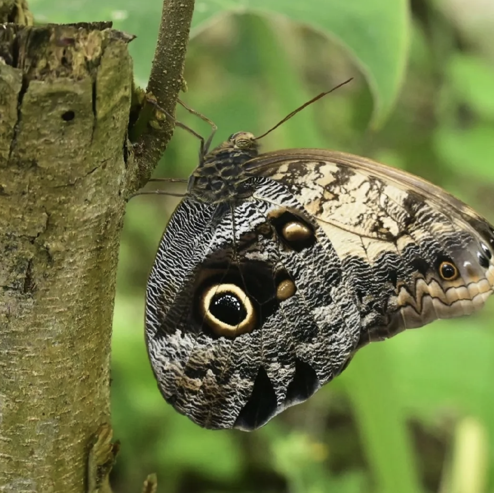

MARIPOSA CALIGO COMÚN
Caligo telamonius memnon

Las alas simulan los ojos de un búho, lo que puede asustar a sus depredadores.
- Nombre científico: Caligo telamonius memnon
- Mimetismo: Las alas simulan ser los ojos de un búho.
- Hábitat: Selvas de Centro y Sudamérica.
- Sentido: Visión.
- Uso: Supervivencia.
- Función: Ocultamiento y asustar.